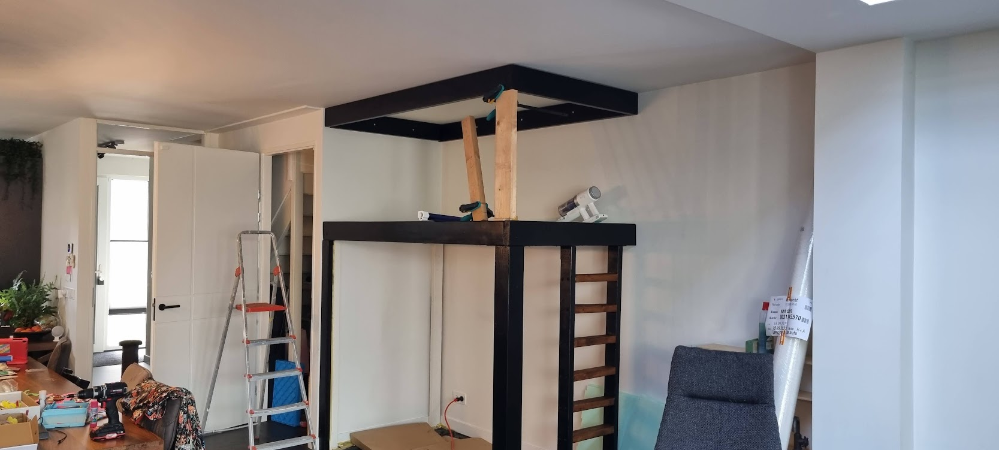
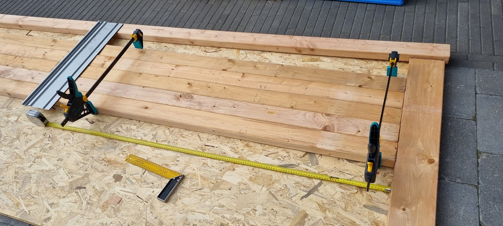
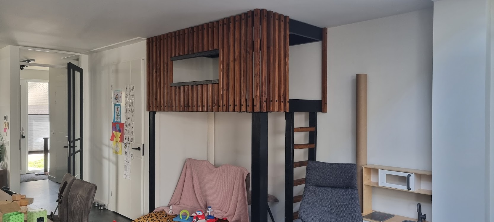
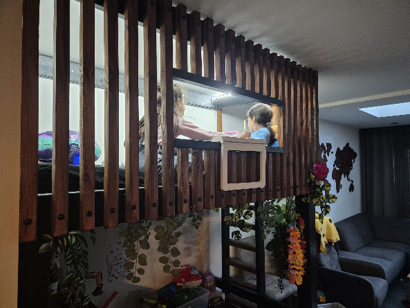

Outside the screen / 2023
Boomhut
An indoor treehouse in the living room, designed in Autodesk and built in wood.
The first project where the model, the cut list, and the thing itself all had to agree.
The build
From drawing to timber to a place that gets used.




What mattered
In the style of the house, not a theme park.
The hut sits in a corner of the living room, raised 1.5 metres, with a ladder, a child-height window, black structure, and walnut-coloured slats. The design follows the existing black and walnut furniture rather than trying to become the room’s loudest object.
The model became the material plan. Dimensions were turned into a cut list so the timber fitted the available lengths without overshoot. Most of the build was done alone, with help on the stair from Ramiro.